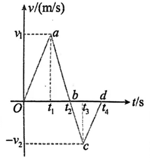
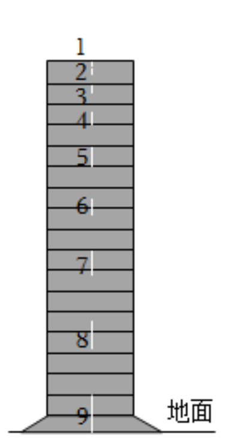
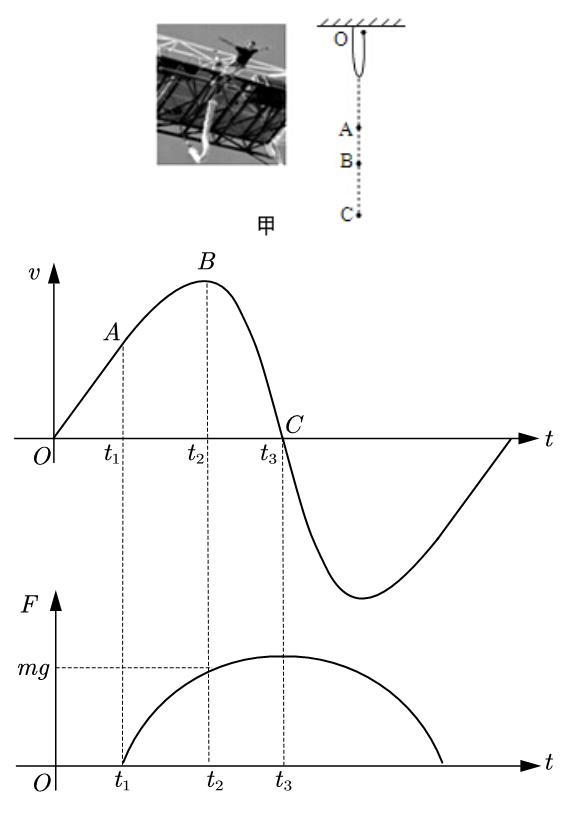
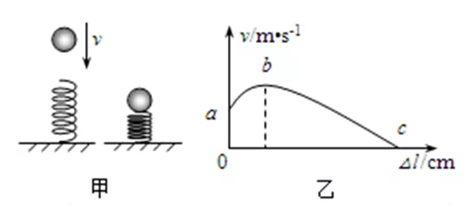
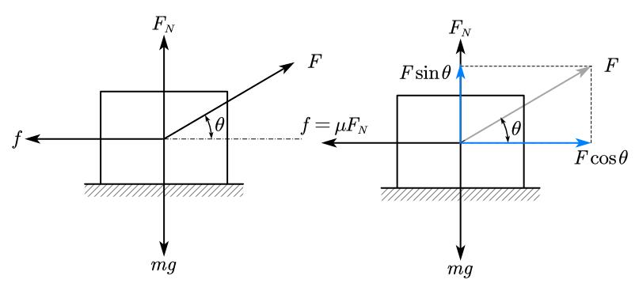
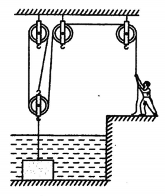
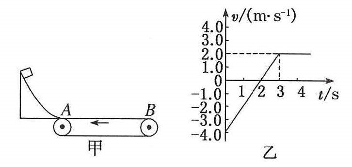

2024入境考-物理科简析
本文属于《关于钦州二中开学考的详细分析》 - Windelingの間一部分，纯属个人观点，与学校无任何关系。TMD我物理考的还没政治好我为什么来写这个
先说结论
【结论】就已有资料来看，入境考物理考卷有以下特点：
- 注重考查基础知识，考察范围从初中全册到高中必修一
- 具有区分度的压轴题注重于计算能力和理解能力
- 近两年涉及的高中内容有：
①必修一第一章 描述运动的基本概念
-1 参考系 时间 质点
-2 位置 位移
-3 ▲位置变化的快慢与方向——速度
-4 ▲实验:用打点计时器测量小车的速度
-5 速度变化的快慢与方向——加速度
②必修一第二章 匀变速直线运动的规律
-4 ▲匀变速直线运动规律的应用
③必修一第三章 相互作用
-3 摩擦力
-4 力的合成
-5 力的分解
-6 共点力作用下物体的平衡
2023年
这年的物理试卷内容较少，推测其考试时间较短。
一、单选题
单选题除13题略有难度以外，均为较基础的题目，整体难度与中考卷差不多。
13题切割体的压强问题也是中考复习时经常训练的题目
【题目】13.甲、乙、丙三个实心正方体($\rho_{甲}>\rho_{乙}>\rho_{丙}$)分别放在水平地面上，它们对地面的压强相等。若沿水平方向分别在甲、乙、丙三个正方体上部切去一部分，使三个正方体的剩余部分对地面的压强仍然相等，则切去部分的质量$\Delta m_{甲}、\Delta m_{乙}、\Delta m_{丙}$的关系为（ ）
A. $\Delta m_{甲}<\Delta m_{乙}<\Delta m_{丙}$
B. $\Delta m_{甲}=\Delta m_{乙}=\Delta m_{丙}$
C. $\Delta m_{甲}>\Delta m_{乙}>\Delta m_{丙}$
D. $\Delta m_{甲}<\Delta m_{乙}=\Delta m_{丙}$
【答案】A
【解析】
由题目条件可知，前后压强不变，在切割时变化的压强一样
由$p=\frac{F}{S}$得
将$G$用$mg$展开，$S$用边长$a$展开
那么我们根据正比例$k=\frac{x}{y}$可知，$a$与$\Delta m$成的其实是正比例关系，也就是说，当$a$比较大时，$\Delta m$也相对较大。
那么比较$\Delta m$就变成了比较$a$。
对于一开始，压强相等，我们根据$p=\rho gh$列出
即
根据反比例$k=xy$可知$\rho$和$a$存在反比例关系，那么$\rho$较大时，$a$较小，$\Delta m$也相对较小。题目中，于是就是反过来，得A答案
【方法】定性分析：正比与反比关系
二、多选题
多选题16、17考察初中基础内容，18、19、20考察高中必修一第一章基础内容，只要看过课本就能写出。
【题目】18.生活、生产中，在描述物体运动快慢的语句中常涉及到速度，有时语句中的速度指的是平均速度，有时语句中的速度指的是瞬时速度，这要依据速度、平均速度的定义及语境来区分。以下叙述中的速度指瞬时速度的是（）
A.歼-16战机在山东号航母上的起飞速度为 60 m/s
B.和谐号动车组的最大速度可达 380 km/h
C.电磁轨道炮炮弹的发射速度可达 10 km/s
D.传统故事《龟兔赛跑》中兔子的速度小于乌龟的速度
【答案】ABC
【解析】瞬时速度指某一时刻的速度大小，概念辨析请看高中必修一（教科版）第一章第三节
【题目】19.如图所示， 2019 年 10 月，随着首辆动车组缓缓从梅州西站开出，梅州进入高铁时代。梅汕铁路（梅州西站至潮汕站）全线长 122.4km, 列车行驶时间由原来的 2.5 小时缩短为 58 分钟。下列说法正确的有（）
A.研究列车过桥所用时间时，不能把列车看成质点
B.“122.4km”指的是位移大小
C.列车由梅州西站至潮汕站平均速度约为50km/h
D.列车由梅州西站至潮汕站平均速率约为125km/h
【答案】AD
【解析】物体形状对研究结果影响小时才能视为质点，位移大小指的是位置间直线距离，平均速度有方向，平均速率有方向。概念辨析请看高中必修一（教科版）第一章第一至三节
【题目】20.一个质点的v-t图像如图所示，规定向东为正方向，$a$、$b$、$c$、$d$对应时刻分别为$t_{1}$、$t_{2}$、$t_{3}$和$t_{4}$，已知$v_{1}>v_{2}$，$2t_{1}>t_{2}$，$Oa$平行$cd$，由图可判断出（）
A.质点在 $t_{2}$ 时刻向东运动最远
B.质点的加速度先增大后减小，再增大再减小
C.质点在 $t_{1}$ 的加速度为正、在 $t_{2}$ 至 $t_{3}$ 的加速度为负
D.质点在 $t_{1}$ 至 $t_{2}$ 的加速度大于 $t_{3}$ 至 $t_{4}$ 的加速度
【答案】AD
【解析】
A. v-t图像表示速度与时间的变化关系，当速度开始反向时（$t_{2}$），质点开始反方向运动，此时位移最大。
B. v-t图像中斜率表示加速度，图中直线部分斜率不变，加速度大小不变。
C. 加速度为正时速度增大，为负时速度减小
D. 因为$Oa$平行$cd$，并且v-t图像中斜率表示加速度，所以0-1s的加速度与3s-4s的加速度相同。
根据$a=\frac{\Delta v}{\Delta t}$，$a_{1s-2s}=\frac{0-v_{1}}{t_{2}-t_{1}}=-\frac{v_{1}}{t_{2}-t_{1}}$，$a_{3s-4s}=a_{0-1s}=\frac{v_{1}-0}{t_{1}-0}=\frac{v_{1}}{t_{1}}$。
因为$2t_{1}>t_{2}$，有$t_{1}>t_{2}-t_{1}$，因为正负号表示方向，不参与大小比较，我们比较其绝对值发现$a_{1s-2s}>a_{3s-4s}$
【方法】图像分析：
s-t图像斜率代表速度
v-t图像斜率代表加速度
20题的D选项判断有一定难度，需要了解v-t图像的性质，自学这点可能需要参考一些工具书。
在暑假备考时建议找来高中必修一课本看一看并完成一下课后习题，在基础知识牢固后再利用教辅了解一些考点。
三、实验题
初高中实验混合，很简单。打点计时器的使用考了三个空。
打点计时器的考点较少，这里列一下
- 打点计时器，顾名思义就是通过每隔一段时间打一个点，来让你知道物体运动到哪了，这点不熟悉的话建议看课本高中必修一（教科版）第一章第四节。
- 接50Hz（每秒变化50次）交流电，电流每0.02秒变化一次，因此也是每0.02秒打一次孔。
- 使用时先开电源再放手纸带，不然就漏点了，反正同一位置多打几个点也不会有什么影响。
- 两点之间隔着$n$个点，那这两点时间间隔多久？自己画图自己看，不用死记。（当然反过来告诉你两个点相隔$n$秒，问你中间几个点你也得会）
四、计算题
23题属于基础计算题，除了计算可能出错外没有什么可说的。
24题考察匀加速直线运动规律，删去了原题较难的一问（3），需要同学们做一些题目才能熟练完成。
附上原题目
【题目】24.
某同学利用数码照相机连拍功能研究运动物体的残影，拍摄过程中每次曝光以及曝光之间的时间间隔固定不变。实验者使一弹性小球从某砖墙前自由落下的同时开始连拍，观察到如图所示的情景（图中1、2、3…是由于小球的运动而在照片上留下的模糊径迹）。测得每块砖的平均厚度为5cm，第3、9条径迹的长度分别为2.2cm 和 8.2cm，小球刚好在第9次曝光结束时与地面碰撞，从下落点到第9条径迹上端共有16层砖的厚度，整个过程不计空气阻力及碰撞时间。求：（g取10N/kg）
（1）连拍过程中的单次曝光时间。
（2）相机每隔多长时间曝光一次。
（3）若小球每次与地面碰后速度反向，大小仅为碰前的一半，试计算第 25 次曝光开始后多久小球触地。
【答案】
（1）0.02s
（2）0.05s
（3）0.0075s
【解析】
（1）曝光时间，其实就是小球经过残影这段的时间。
我们用$s=v_{0}t+\frac{1}{2}gt^{2}$来计算。给出长度的两条径迹中，第三条没有距离顶的高度，无法计算$v_{0}$，所以我们选择第九条径迹。
先计算到达第九条径迹时的速度$v_{09}$，用$v^{2}_{t}-v^{2}_{0}=2ax$计算
$v_{09}^{2}-0=2gh$
代入数据是（前面计算h的步骤省略）
十字相乘，41没法拆，拆25，发现41×5=205
记得是$10t$不是$t$
【方法】换元法：换元勿忘还原
（2）隔多长时间曝光，就是曝光完到下一次开始要多久。
看图也知道，从第三条径迹开始到第九条开始隔了6个曝光时间差（不曝光的时间）加上6个曝光时间。
第三条径迹的速度不好算，怎么办？
介绍结论：匀变速直线运动中，中点速度等于平均速度（$\overline{v} = \frac{v_{0}t+\frac{1}{2}at^{2}}{t}=v_{0}+a \times \frac{t}{2}=v_{\frac{t}{2}}$）
有了曝光时间，我们可以轻易地算出径迹三的中点时刻速度，为1.1m/s。而径迹九的中点时刻速度为4.1m/s。中点时刻到中点时刻距离和开头到开头距离一样，都是6个曝光时间差加上6个曝光时间走过的路程。
这段路程走的时间就是
解得$\Delta t=0.05s$
【方法】二级结论：匀变速直线运动中，中点时刻速度等于平均速度
（3）既然碰撞后速度变一半，那就先算碰撞时的速度
接下来算每次抛起落下所需时间。因为上抛其实就是下落的倒放，所以时间是一样的。这里用只含速度的式子展开
第二次速度一半，其实就是
每掉一次就乘一个$\frac{1}{2}$，于是
从第九次曝光到第二十五次曝光，相差十六个曝光时间差+曝光时间，算一下是0.78s。
一个个代数看看这个时刻在第几次反弹附近。发现在第三次到第四次反弹中间，第四次反弹时已经是0.7875s，也就是0.78s过去0.0075s后。
于是得出答案0.0075s
【方法】时间反演：在某时刻对物体进行“时间反演”操作（即运动过程视频回放），也就是物体的“坐标不变，速度反向”，如果“坐标不变，速度反向”后，物体沿着原来的轨迹返回去，就具有“时间反演对称性”。（概念不需要这么清楚，你知道哪些情况可用即可）
时间反演对于竖直上抛转化为自由落体、斜抛运动转化为平抛运动都适用。
可选择性浏览:《科普：时间反演守恒》-www.jianshu.com/p/b4a7f06bd6b3
2024年
2024年的题量相比去年明显要更多，同时考察的高中知识也开始深入。但是难度不高，大部分为中考题。
一、单选题
均属基础题，中考难度，而且题量很少。
基础不牢的同学建议复习一下初中知识。
二、多选题
没有考察高中内容，依旧是中考难度。
【题目】9.游客在蹦极运动中从平台上由静止开始下落，从开始下落至第一次到达最低点的过程中，游客的（）
A.动能先增大后减小
B.重力势能一直减小
C.机械能保持不变
D.机械能一直增大
【答案】AB
【解析】这道题整个过程的分析可能有点难度，我列出来讲一下
图中大概画出了速度与弹力与时间的变化关系。
$OA$段：这段过程中人自由落体，绳子尚未拉直，所以弹力为0，速度均匀增大。
$A$点：此时绳子开始被拉紧，弹力开始出现，加速度开始减小，此时路程等于绳子原长。
$AB$段：这段速度依然继续增大，但是增大的速度放缓（加速度减小），弹力开始增大。
$B$点：此时弹力开始超过重力（也就是弹力等于重力，加速度减小至0，物体不再加速，准备开始减速），速度达到最大值。
$BC$段：这段速度不断减小，弹力还在不断增大，动能不断转化为弹性势能。
$C$点：此时弹力达到最大，速度减小为0，动能全部转化为弹性势能，到达最低点。
那么就可以根据分析看选项：
A.看图就知道是对的。
B.肯定对，一直都在下降。
C.机械能守恒时对于系统而言的，对于人和绳整个系统，只有重弹力做功，机械能守恒。
D.绳子伸长，机械能增大，而人和绳整个系统机械能守恒，所以人的机械能减小。
【方法】模型：
这类模型（弹簧与物体机械能守恒）有一类共性：当受力平衡时，速度达到最大值。
根据以下题目，想一想为什么。（提示：弹簧模型）
【例】如图甲所示，小球从某高度处静止下落到竖直放置的轻弹簧上并压缩弹簧。从小球刚接触到弹簧到将弹簧压缩到较短的过程中，得到小球的速度$v$和弹簧被压缩的长度$\Delta L$之间的关系，如图乙所示，其中b为曲线较高点。不计空气阻力，弹簧在整个过程中始终发生弹性形变，就这一过程，下列说法正确的是( )

A.小球受到的弹力逐渐减小
B.小球在b点时重力和弹力大小相等
C.在运动过程中小球的动能不断增大
D.在运动过程中小球的机械能保持不变
【答案】B
这类模型在高中仍会出现，请同学们注意。
三、实验题
初高中实验混合，依旧是很简单。打点计时器的使用依旧是重点（见上文）。你这分析好水啊
四、计算题
重头戏在这里。
13题初中内容，八年级来了都做得出来。
14题则需要用到力的分解列方程，虽然题目难度不高，但是你必须学会必修一大部分内容（前三章）才能解答。说明考试内容正在向着更深的内容推进，但是对深度要求并不高。在以后的考试中可能需要了解整本高中必修一的基础知识才能顺利作答。
【题目】14.运动员通过细绳拉着质量为 $m$ 的轮胎在水平地面上向前匀速跑步，己知细绳对轮胎的拉力大小为 $F$ ，细绳与水平方向的夹角为 $\theta$ ，重力加速度为 $g$ ，不计空气阻力，求：
（1）地面对轮胎的支持力大小$F_{N}$
（2）轮胎与水平地面之间的动摩擦因数$\mu$
【答案】
【解析】

受力分析如上图，因为物体匀速前进，所以受力平衡。我们选取水平和竖直两个方向分别列方程：
解得$F_{N}=\frac{Fcos\theta }{mg-Fsin\theta } $
【方法】正交分解：
列方程式时，我们会选择将力分解到两个方向，并对两个方向分别列方程式计算。通常这个方向选择水平和竖直，但是具体选择看的是不在这个方向上的力是否易于分解。
同时不要忘记，只有物体匀速运动才会受力平衡，加速的物体要根据加速度方向分析，水平方向的加速度只影响水平方向的分力等等。
15题是经典的初中压轴题，除了理解题目外，计算能力也很重要。
15.如图所示，质量为 $m_{人}=60kg$ 的工人站在岸边通过一滑轮组打捞一块沉没在水池底部的石材，该滑轮组中动滑轮质量为 $m_{动}=6kg$ 当工人用 $F=90N$ 的力拉滑轮组的绳端时，石材仍沉在水底不动。工人继续增大拉力将石材拉起，在整个提升过程中，石材始终以 $v=0.2m/s$ 的速度匀速上升。在石材脱离水池底部至完全露出水面的过程中，地面对人的支持力的最大值与最小值之比为 $23:20$ ，绳重及滑轮的摩檫均可忽略不计，石材的密度： $3\times 10_{3}kg/m^{3}$ ，$g$ 取 $10N/kg$ ，求：
（1）与打捞前相比，当人用 $F=90N$ 的力拉绳端时，水池底部对石材的支持力变化了多少？
（2）石材的重力 $G$
（3）当石材完全露出水面以后，人拉绳子的功率 $P$ 为多少？
【答案】
（1）$\Delta F_{N}=210N$
（2）$G_{石}=540N$
（3）$P_{人}=120W$
【解析&方法】数据对齐：
参考Windeling-物理学习之骗分
首先我们可以看到这个比值相差为三，因而可以推定本题目中大部分的数字都是三的倍数。
其次，运用做题经验和生活常识缩窄数据范围。本题中两个支持力之比是$23:20$。进而可以推定真正支持力之比应该是$230N:200N$，或者是$460N:400N$，通常我们会选择较符合实际情况的一组进行先行试验，如果选择第一组数据计算的话，石头重量将高达上千牛，也就是几百千克，所以这里应该采用第二组数据进行先行试算。第二组数据估算得石头的重量大概在$500~600N$左右，较符合生活实际。
通过试算可知，两次人对绳子的拉力分别为$140N$和$200N$。由滑轮组的性质和动滑轮本身的自重可知，最终作用到石头上的力分别为$540N$和$360N$，也就是说石头出水前后拉力变大了$180N$，故浮力等于$180N$。
由浮力公式可以求出石头的体积，进而根据石头密度推知石头原重，将其与上述计算数据相核对，发现计算结果正确。这时候我们就可以直接把算得的结果填入到公式内，有了石头自重的关键数据就可以得分了。接下来第三问得知的石头的重量后，也非常容易解答了。
预测
个人猜测明年题目会涉及到牛顿三定律的内容，并且结合初中题型进行考察。
为此，考生在暑假一定要做好预习，起码将课本阅读一遍，并且适当完成课本练习。但不建议马上买必刷题这类教辅直接做，因为难度较大，个人建议学会一些基础即可，巩固提升可以适当留到开学以后再做。
推荐几道题目：
【题目】（多选）如图所示，带支架的平板小车沿水平面向左做直线运动，小球用细线悬挂于支架前端，质量为 $m$ 的物块 $B$ 始终相对小车静止地摆放在右端。 $B$ 与小车平板间的动摩擦因数为 $\mu$ ，若某时刻观察到细线偏离竖直方向 $\theta$ 角，则此刻（）
A.小车对物块 $B$ 的摩擦力大小为 $\mu mg$
B.小车对物块 $B$ 的摩擦力水平向右
C.小车对物块 $B$ 的摩擦力大小为 $mg tan\theta$
D.小车对物块 $B$ 的合力大小为 $mg\sqrt{1+tan^{2}\theta}$
【题目】如图，轻弹簧的下端固定在水平桌面上，上端放有物块$P$，系统处于静止状态。现用一竖直向上的力$F$作用在$P$上，使其向上做匀加速直线运动。以$x$表示$P$离开静止位置的位移，在弹簧恢复原长前，下列表示 $F$ 和之间$x$关系的图象可能正确的是（）
【题目】（多选）如图甲所示的水平传送带 $AB$ 逆时针匀速转动，一物块沿曲面从一定高度处由静止开始下滑，以某一初速度从传送带左端滑上传送带，在传送带上由速度传感器记录下物块速度随时间的变化关系如图乙所示（图中取向左为正方向，以物块刚滑上传送带时为计时起点）。已知传送带的速度保持不变，重力加速度 $g$ 取 $10 m/s^{2}$ 。关于物块与传送带间的动摩擦因数 $\mu$ 及物块在传送带上运动第一次回到传送带左端的时间 $t$ ，下列计算结果正确的是（）

A.$\mu=0.4$；B.$\mu=0.2$；
C.$t=4.5s$；D.$t=3s$
——分割线——

【答案】BCD
【方法】还有哪些物体像物体A一样满足$a=gtan\theta$呢？
（提示：加速运动斜面上的物体？加速导致水面倾斜时上面的一滴水？）
【答案】C
【答案】BC
【方法】在各种传送带上，如倾斜、顺向转动的传送带上，以大于传送带速度、等于传送带速度、小于传送带速度进入，物体运动状态会如何？
（提示：中国科学技术大学 传送带模型和“滑块—木板”模型）